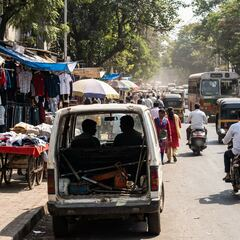

FC Road · Civic
FC Road surprise inspection: PMC staff allegedly found sleeping, chatting in vehicle during duty
Pune Municipal Corporation (PMC) staff were allegedly found sleeping and chatting inside a vehicle on FC Road during duty, instead of carrying out their assigned duties, in a surprise inspection by BJP corporator Ravi Satgaonkar.
